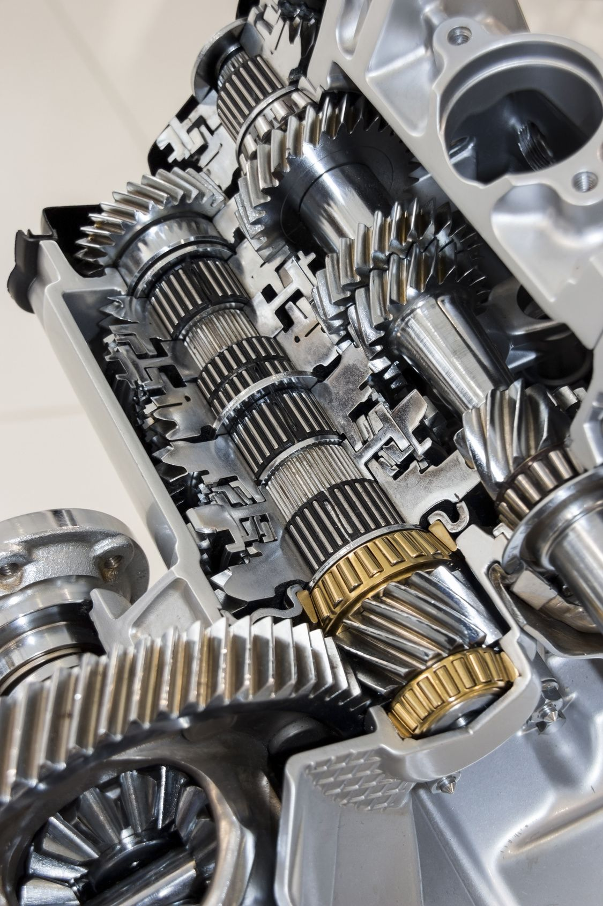
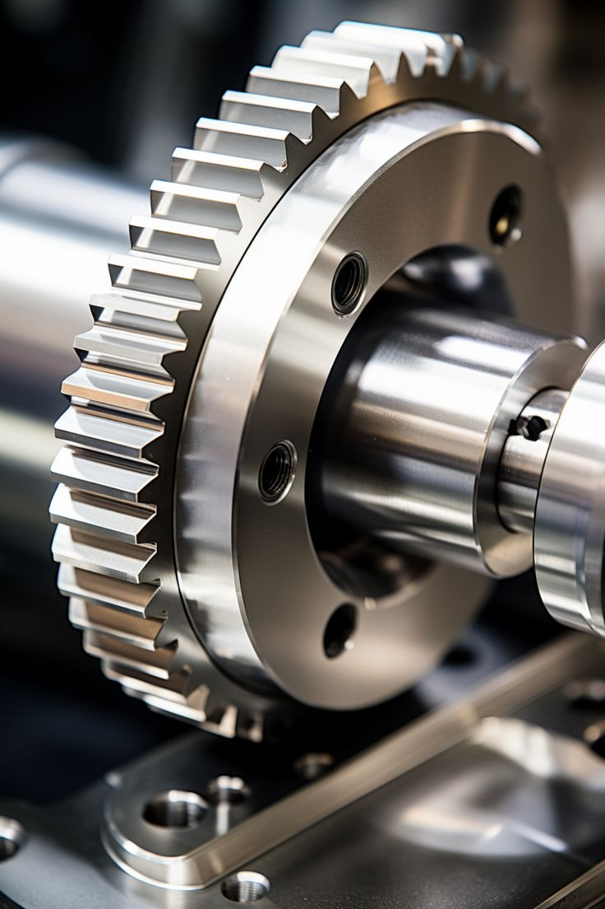
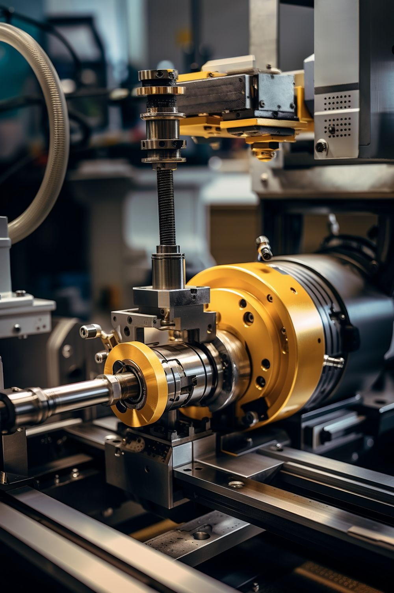

<!-- SERVICES PAGE (English) -->
<section class="fade-in-section hero-section">
  <div class="container">
    <h2>Our Services & Products</h2>
    <p>Doğu Yıldızı A.Ş. provides tailored industrial supply solutions, focusing on:</p>
  </div>
</section>

<section class="scroll-boxes">
  <div class="scroll-box">
    <h3>Import & Wholesale</h3>
    <ul>
      <li>High-performance machinery and technical spare parts for industrial applications</li>
      <li>Direct sourcing from trusted European manufacturers</li>
    </ul>
  </div>
  <div class="scroll-box">
    <h3>Logistics & Trade Operations</h3>
    <ul>
      <li>Efficient international delivery and distribution</li>
      <li>Europe–Turkey–Middle East logistics bridge</li>
    </ul>
  </div>
  <div class="scroll-box">
    <h3>B2B Consulting & Trade Facilitation</h3>
    <ul>
      <li>Long-term supplier relations</li>
      <li>Customs and financial transparency through professional consultants</li>
    </ul>
  </div>
</section>

<section class="products-grid">
  <h3>Product Groups We Specialize In:</h3>
  <div class="product">
    <h4>Industrial Gearbox & Motor Systems</h4>
    
  </div>
  <div class="product">
    <h4>Frequency Inverters</h4>
    
  </div>
  <div class="product">
    <h4>Rolling Mill Equipment</h4>
    
  </div>
  <div class="product">
    <h4>Custom-Made Industrial Machinery Components</h4>
    
  </div>
  <div class="product">
    <h4>Technical Parts & Spare Components</h4>
    
  </div>
</section>

<script>
  // Profit counter animation
  document.addEventListener("DOMContentLoaded", () => {
    const profitTarget = 398120;
    const profitDisplay = document.getElementById("profit-count");
    let current = 0;

    const interval = setInterval(() => {
      current += Math.ceil(profitTarget / 40); // Speed: 40 steps
      if (current >= profitTarget) {
        current = profitTarget;
        clearInterval(interval);
      }
      profitDisplay.textContent = `₺${current.toLocaleString("tr-TR")}`;
    }, 30);
  });
</script>